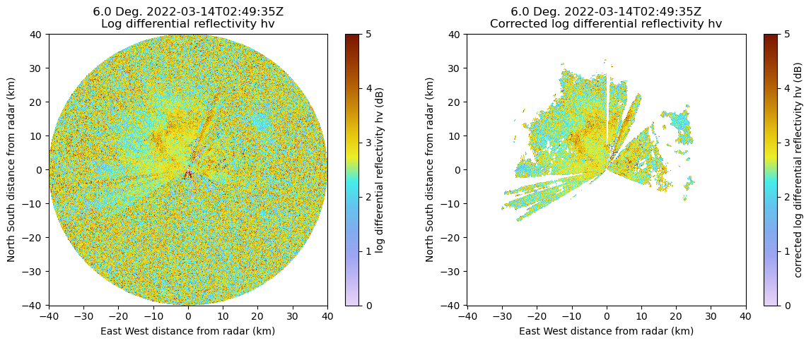

Figures for the SAIL CMAC2.0 Technical Document
Contents
Figures for the SAIL CMAC2.0 Technical Document#
import os
import glob
import time
import numpy as np
import xarray as xr
import pandas as pd
from matplotlib import pyplot as plt
from matplotlib import colors
from matplotlib import ticker
import pyart
def _generate_title(radar, ds, field, sweep):
""" Generates a title for each plot. """
time_str = ds['time'].data[0]
fixed_angle = radar.fixed_angle['data'][sweep]
line_one = "%.1f Deg. %s " % (fixed_angle, time_str)
field_name = str(field)
field_name = field_name.replace('_', ' ')
field_name = field_name[0].upper() + field_name[1:]
return line_one + '\n' + field_name
Processing Keywords#
# Directory where the data are located
DATA_DIR = '/Users/jrobrien/ARM/data/CSU-XPrecipRadar/cmac2/'
# Desired Case for the following figures
CASE_FILE = 'gucxprecipradarcmacM1.c1.20220314-024759.nc'
# Easier to check variable names with xarray
ds = xr.open_dataset(DATA_DIR + CASE_FILE)
ds
<xarray.Dataset>
Dimensions: (time: 9016, range: 668, sweep: 8)
Coordinates:
* time (time) datetime64[ns] 2022-03-1...
* range (range) float32 306.9 ... 4.029...
azimuth (time) float32 0.1251 ... 0.2962
elevation (time) float32 1.055 ... 14.99
Dimensions without coordinates: sweep
Data variables: (12/46)
DBZ (time, range) float64 ...
VEL (time, range) float64 ...
WIDTH (time, range) float64 ...
ZDR (time, range) float64 ...
PHIDP (time, range) float64 ...
RHOHV (time, range) float64 ...
... ...
longitude float64 -106.9
altitude float64 3.149e+03
time_coverage_start |S192 b'2022-03-14T02:47:59Z'
time_coverage_end |S192 b'2022-03-14T02:52:08Z'
time_reference |S192 b'1970-01-01T00:00:00Z'
volume_number int32 0
Attributes: (12/24)
Conventions: CF/Radial instrument_parameters ARM-1.3
site_id: guc
facility_id: C1
comment: This is highly experimental and initial data. Ther...
attributions: This data is collected by the ARM Climate Research...
process_version: CMAC 2.0
... ...
datastream: nsaxsaprcmacppiC1.c1
location_description: North Slope of Alaska (NSA), Barrow, Alaska
doi: 10.5439/1781398
command_line: cmac_sail.py 202203
field_names: DBZ, VEL, WIDTH, ZDR, PHIDP, RHOHV, NCP, DBZhv, cb...
history: created by rjackson on cirrus127.ccs.ornl.gov at 2...# define the radar object
radar = pyart.io.read(DATA_DIR + CASE_FILE)
pd.to_datetime(radar.time['data'][0])
Timestamp('1970-01-01 00:00:01.647226079')
Figure 3: Radial Velocity Texture - 14 March 2022 case#
fig, axs = plt.subplots(1, 1)
display = pyart.graph.RadarDisplay(radar)
display.plot('velocity_texture', sweep=3, vmin=0, cmap='pyart_BuDRd12')
# save the figure
plt.savefig('xprecipradar_cmac2_velocity_texture.png')
Figure 5: Gate ID - 14 March 2022 case#
fig, axs = plt.subplots(2, 2, figsize=[12, 8])
plt.subplots_adjust(wspace=0.3, hspace=0.4)
# Gate ID
ncmap = colors.ListedColormap(["red", "green", "aqua", "gray", "yellow", "orange", "plum"])
labels = ["Mult-Trip", "Rain", "Snow", "No Scatter", "Melting", "Clutter", "Terrain"]
nticks = [0.5, 1.25, 2.1, 3.0, 3.75, 4.75, 5.5]
display.plot('gate_id', sweep=3, cmap=ncmap, ax=axs[0, 0], ticklabs=labels[:], ticks=np.array(nticks))
# Equvialent Radar Reflectivity Factor
display.plot('DBZ', sweep=3, cmap='pyart_HomeyerRainbow', ax=axs[0, 1])
# Radial Velocity
display.plot('velocity_texture', sweep=3, vmin=0, cmap='pyart_BuDRd12', ax=axs[1, 0])
# Correlation Coefficient
display.plot('RHOHV', sweep=3, ax=axs[1, 1], vmin=0.5, vmax=1.0)
# Save the fig
plt.savefig('xprecipradar_cmac2_multipanel.png')
Figure 6: Raw and De-aliased Radial Velocities#
fig2, ax2 = plt.subplots(1, 2, figsize=[14, 5])
plt.subplots_adjust(wspace=0.2)
# Raw radial velocities
display.plot('VEL', sweep=3, ax=ax2[0], cmap='RdBu_r')
# Dealiased Radial Velocities
display.plot('corrected_velocity', sweep=3, ax=ax2[1], cmap='RdBu_r')
# save the figure
plt.savefig('xprecipradar_cmac2_velocities.png')
Figure 7: LP Technique#
Figure 8: Uncorrected and Corrected Reflectivity#
fig3, ax3 = plt.subplots(1, 2, figsize=[14, 5])
plt.subplots_adjust(wspace=0.2)
# Raw radial velocities
display.plot('DBZ', sweep=3, ax=ax3[0], cmap='pyart_HomeyerRainbow')
# Dealiased Radial Velocities
display.plot('corrected_reflectivity', sweep=3, ax=ax3[1], cmap='pyart_HomeyerRainbow')
# save the figure
plt.savefig('xprecipradar_cmac2_reflectivity.png')
Figure 9: Uncorrected and Corrected Differential Reflectivity#
fig4, ax4 = plt.subplots(1, 2, figsize=[14, 5])
plt.subplots_adjust(wspace=0.2)
# Raw radial velocities
display.plot('ZDR', sweep=3, ax=ax4[0], vmin=0, vmax=5, cmap='pyart_LangRainbow12')
# Dealiased Radial Velocities
display.plot('corrected_differential_reflectivity', vmin=0, vmax=5, sweep=3, ax=ax4[1], cmap='pyart_LangRainbow12')
# save the figure
plt.savefig('xprecipradar_cmac2_diff_reflectivity.png')

Figure 10: Estimated Snowfall Rates#
fig4, axC = plt.subplots(2, 2, figsize=[12, 8])
plt.subplots_adjust(wspace=0.3, hspace=0.4)
# Gate ID
px1 = display.plot('snow_rate_ws2012', sweep=3, vmin=0,
vmax=50, cmap='pyart_HomeyerRainbow',
ax=axC[0, 0], title=_generate_title(radar, ds, 'Wolf and Snider (2012)', sweep=3))
# Equvialent Radar Reflectivity Factor
display.plot('snow_rate_ws88diw', sweep=3, vmin=0,
vmax=50, cmap='pyart_HomeyerRainbow',
ax=axC[0, 1], title=_generate_title(radar, ds, 'WSR 88D High Plains', sweep=3))
# Radial Velocity
display.plot('snow_rate_m2009_1', sweep=3, vmin=0,
vmax=50, cmap='pyart_HomeyerRainbow', ax=axC[1, 0],
title=_generate_title(radar, ds, 'Braham(1990) 1', sweep=3))
# Correlation Coefficient
display.plot('snow_rate_m2009_2', sweep=3, cmap='pyart_HomeyerRainbow',
ax=axC[1, 1], vmin=0, vmax=50, title=_generate_title(radar, ds, 'Braham(1990) 2', sweep=3))
# save the figure
plt.savefig('xprecipradar_cmac2_snowfall.png')